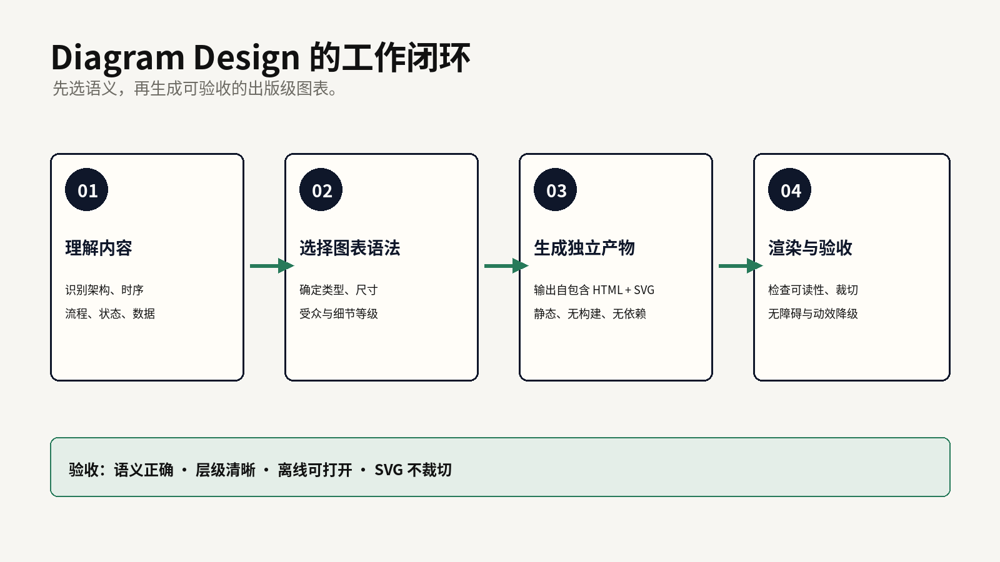
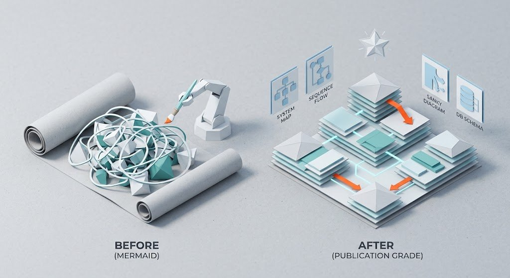

Design DNA
图谱优先
米白纸底、黑灰细线、等宽标记和轻蓝强调，让节点、连接、索引和注释成为第一视觉层。
papergraphmonomanual
Diagram Design 不是给 Mermaid 换一层颜色，而是先判断读者要理解的关系，再选择图表类型、尺寸和细节等级，生成可以离线打开的 HTML + SVG。
39 types · self-contained · static-first米白纸底、黑灰细线、等宽标记和轻蓝强调，让节点、连接、索引和注释成为第一视觉层。
默认静态 HTML + SVG，无构建和外部图片依赖；浏览器打开即可继续检查、导出和修改。
架构、时序、流程、状态、ER 和依赖图各有语法。换字体不能修复错误的关系模型。
使用时先写清读者要追踪的关系，再让 Agent 选择 layout grammar。这样失败时能知道是语义、布局、内容删减还是 SVG 渲染出了问题。
理解内容：架构、时序、状态、流程、数据还是治理？
收敛输出：冻结 type、size、detail、audience 四个旋钮。
生成产物：输出自包含 HTML + SVG，并记录合并/折叠内容。
浏览器验收：检查裁切、对比度、键盘、屏幕阅读器和离线打开。
官方为不同 Agent 宿主提供不同入口。共享目录不等于共享更新机制，安装后要用一个最小 Flowchart 验证 skill 真能生成独立文件。
| 宿主 | 官方入口 | 首次验收 |
|---|---|---|
| Claude Code | /plugin marketplace add cathrynlavery/diagram-design/plugin install diagram-design@diagram-design | 生成 HTML + SVG，离线打开 |
| Codex | codex plugin marketplace add cathrynlavery/diagram-designcodex plugin add diagram-design@diagram-design | 确认 marketplace 与插件更新机制 |
| Factory Droid | droid plugin marketplace add https://github.com/cathrynlavery/diagram-design | 确认 scope 和 commit 更新 |
| Pi | pi install https://github.com/cathrynlavery/diagram-design | reload 后生成最小图 |
为刚加入项目的工程师生成 architecture diagram。
格式：独立 HTML + SVG；尺寸：slide-16x9；细节：balanced。
保留主路径、关键依赖和异常入口；不使用外部图片和阴影。
验收：离线打开、节点标签不重叠、箭头不穿过文字、SVG 不裁切。架构关系用 Architecture，时间顺序用 Sequence，分支决策用 Flowchart，实体与字段用 ER，角色交接用 Swimlane，依赖路径用 Dependency graph。导入 Mermaid 或 draw.io 时检查 fidelity ledger：哪些节点合并、哪些注释折叠、哪些关系丢失。

原创工作流图：理解内容 → 选择语法 → 生成产物 → 浏览器验收。
下面的图片是来源帖展示的视觉效果示例，正式纳入卡片作为来源素材。它帮助理解“出版级”的视觉方向，但不能证明当前版本的真实渲染、性能、可访问性或输出结构。

来源帖效果示例。来源：Xiaoxi｜未未的原帖。